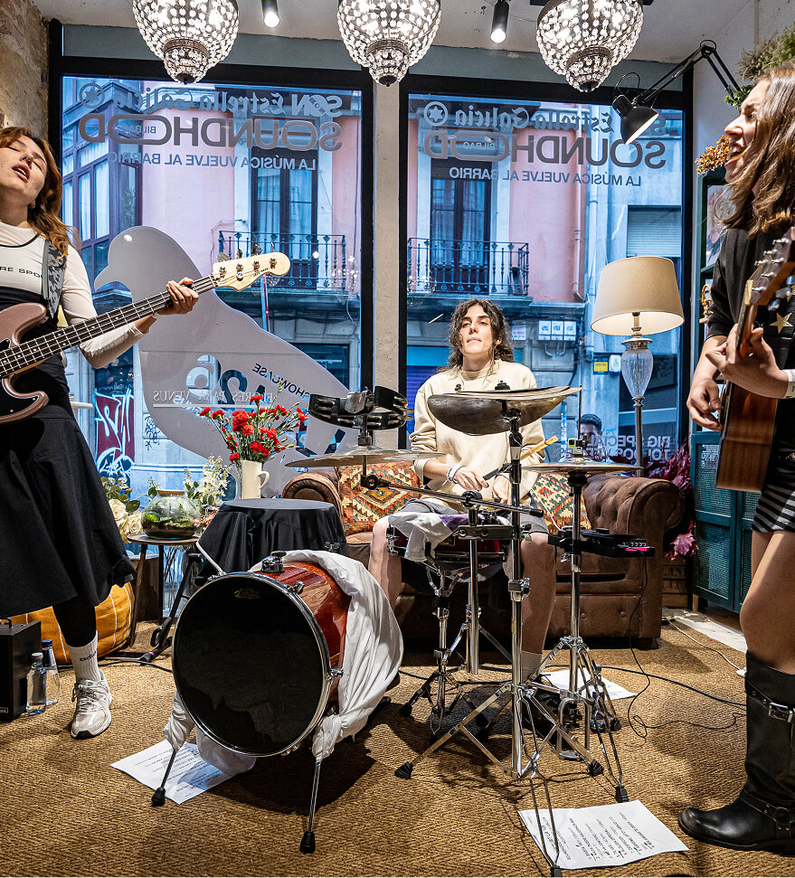
en colaboración con SON ESTRELLA GALICIA
De la sala al barrio: Soundhood SON Estrella Galicia redefine la experiencia musical en Bilbao
El proyecto musical cervecero SON Estrella Galicia transforma Bilbao en un recorrido musical donde las salas, el barrio y la cultura local vuelven a ser protagonistas
El pasado 11 de abril, mientras Justin Bieber salía al escenario del Coachella, Soundhood SON Estrella Galicia celebraba la música con una propuesta mucho más disruptiva. Democratizando la cultura y haciéndola de todos.
En lugares pequeños se vive la música a lo grande
Si grupos como Foo Fighters o Metallica, con capacidad para llenar grandes estadios, están volviendo a tocar en salas pequeñas, es porque ahí la música se vive diferente. Y es que la distancia a la que llega el sonido de un amplificador no es comparable a la cercanía y conexión que viven público y artista en una sala. ¿Te imaginas ver a Rosalía en un recinto de 150 personas? Pues eso es algo que hizo SON Estrella Galicia en 2016, que llevan desde 2009 descubriendo talento emergente con un criterio comparable al de los mejores scouts deportivos de las grandes ligas.
Impulsado por SON Estrella Galicia, Soundhood nace con una misión clara: apoyar a las salas como verdaderos catalizadores del talento y reconstruir el tejido cultural de las ciudades. “Un barrio sin salas es una urbanización”, comenta Víctor Mantiñán, director de activación de Hijos de Rivera. “Está muy bien que existan grandes festivales, pero si solo vamos a estos, las salas desaparecen, los grupos emergentes no tienen dónde tocar y se rompe el tejido cultural. La música también necesita lugares donde crecer día a día”.
“Un barrio sin salas es una urbanización”
- Víctor Mantiñán, director de activación de Hijos de Rivera
Más que un festival de música
En Bilbao, el concepto volvió a cobrar vida, transformando la ciudad en un recorrido musical en movimiento. A lo largo del día, distintos espacios —desde una floristería hasta una iglesia— se convirtieron en escenarios y puntos de encuentro. La jornada empezó a las 13:00 con una sesión vermut con DJ en uno de los restaurantes de moda de la ciudad, Perro Chico, situado frente al río Nervión. Horas después, y a pocos metros calle arriba, un taller de reparación de violines y violoncelos cambiaba su habitual jornada y daba paso a una especial, y ya habitual de los Soundhoods, cata de cervezas apodada “¿A qué suena tu cerveza?”. En donde los asistentes pudieron observar y saborear las analogías entre las diferentes cervezas de la marca y los diversos estilos musicales e instrumentos existentes.
El primer concierto de la tarde dejaba claro el espíritu del formato, una floristería se convertía en escenario para que el grupo La 126 deleitase al público con su pop rock entre flores y jarrones. En este mismo concierto se vivió uno de los momentos más icónicos del día y más representativos del movimiento, cuando la vecina del primer piso de ese mismo edificio, una señora de unos 80 años, decidió bajar a inspeccionar el revuelo y, haciéndose hueco entre los asistentes hasta la primera fila del concierto, se quedó como una fan más, a disfrutar de la actuación del joven grupo femenino. Una muestra tangible de lo que está consiguiendo Soundhood: tejiendo comunidad a través de la música, en su forma más cercana. Cerraba este espacio la actuación de Aeronave Adolescente.
Un espacio icónico: una antigua iglesia
A pocos metros, siguiendo el río, darían comienzo el resto de actuaciones en un espacio idílico e icónico de la cultura de la ciudad. Bilborock es un centro de acogida para creadores de música, cine, danza y otras disciplinas, que se sitúa en una antigua iglesia. Allí mismo, distintos grupos de la ciudad abrían sus salas de ensayo al público y hacían de precuela para que poco más tarde diese inicio el cartel principal.
Toldos Verdes, el grupo madrileño de punk pop, era el encargado de abrir el escenario principal. Bajo la cúpula de la antigua iglesia, la propuesta de los chicos de Madrid, profundamente ligada al directo y a la cultura de sala, encajó de forma natural en un formato que prioriza la cercanía y la conexión. “Nosotros hablamos mucho de eso: la cultura y el barrio tienen que ir de la mano. Incluso nuestro nombre, Toldos Verdes, viene un poco de ahí”, comentaban a los micrófonos de La Vanguardia. Y es que ellos también opinan sobre la diferencia de vivir la música de cerca, frente a la distancia de los grandes escenarios. “Donde mejor nos lo pasamos casi siempre es en una sala pequeña, con 200 personas, sudando y cantando todos los temas”; “en una sala el público va a verte a ti, la conexión es mucho más fuerte. Esa energía se nota muchísimo.”
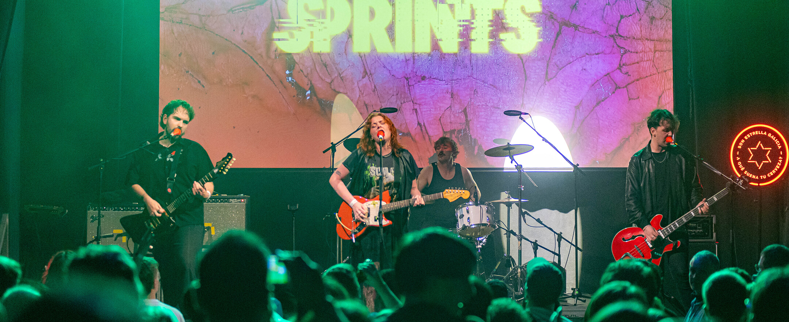
Soundhood SON Estrella Galicia es un movimiento que activa ciudades y pone en valor su cultura local
Una de las características principales de Soundhood se manifestaría en el siguiente concierto: su capacidad para descubrir talento. Lo vivido en Bilbao con Big Special fue la prueba definitiva de esta capacidad que tiene el festival. Tras su actuación, no había duda: buena parte de los asistentes salieron convertidos en fans incondicionales del dúo de Birmingham. Con una puesta en escena cruda y directa, demostraron que no hacen falta grandes artificios para llenar un espacio de energía. Siendo solo dos sobre el escenario, lograron algo mucho más difícil: hacer vibrar a toda la sala, contagiar su intensidad y generar una conexión inmediata con el público que convirtió el concierto en uno de los momentos más memorables de la jornada. Cerraba la noche la actuación de Sprints, una banda irlandesa de garage punk.
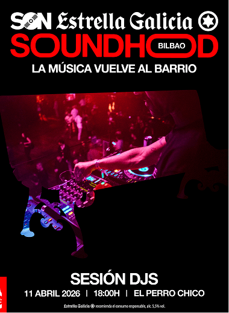
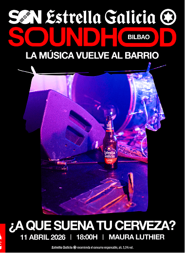
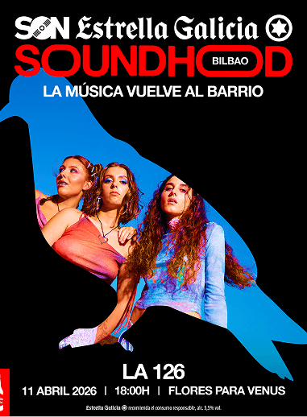
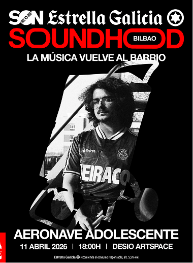
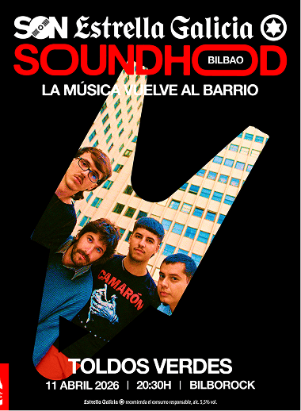
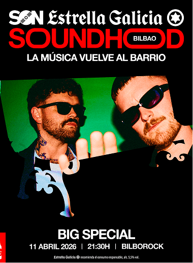
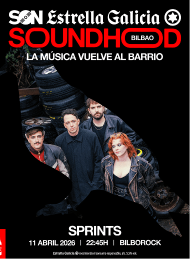
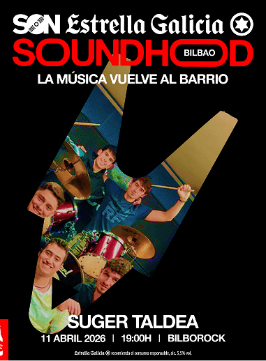
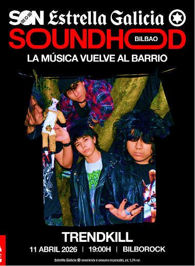
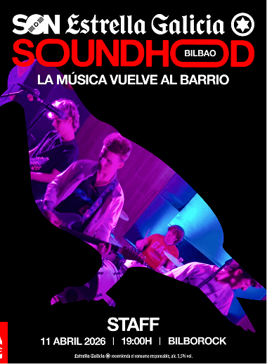
Un formato en expansión
Desde 2009, Soundhood SON Estrella Galicia ha recorrido distintas ciudades y convertido sus calles y sus locales cotidianos en epicentros de música y en conciertos inesperados. En su evento de Coruña podías entrar a una lavandería o a un antiguo club de alterne reconvertido y disfrutar de conciertos íntimos y llenos de energía. En Bilbao, en una floristería y en una iglesia. Sobre su futuro, Víctor Mantiñán comentaba lo siguiente: “El objetivo es que la gente vuelva a las salas a descubrir música. Si eso implica crear nuevos formatos como Soundhood, lo haremos. Ya estamos en Granada, Madrid, Galicia, Londres, Barcelona, Bilbao…. Donde haya cultura viva, ahí estaremos.”
Próximas paradas
Víctor Mantiñán sobre los siguientes pasos del festival: “Seguimos apostando por llevarlo a otras ciudades, siempre de la mano de las salas y como homenaje al increíble y necesario trabajo que realizan para que la música siga siendo emocionante, vibrante y disruptiva. Es un concepto con suficiente flexibilidad para que cada edición de Soundhood se adapte al carácter único de los barrios en los que se implanta, manteniendo su esencia y poniendo en valor el talento y la cultura local”.
La música es capaz de convertir desconocidos en comunidad y momentos fugaces en recuerdos que permanecen. Soundhood SON Estrella Galicia nos demuestra que no hace falta ir lejos para vivirla de verdad, solo volver a los lugares donde todo empieza. Y esto termina aquí: los próximos eventos de SON Estrella Galicia ya están en camino. La siguiente historia puede empezar muy cerca de ti.